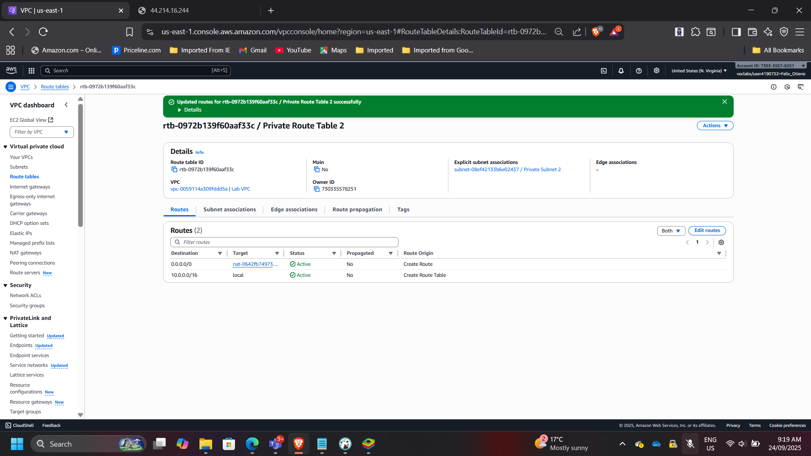
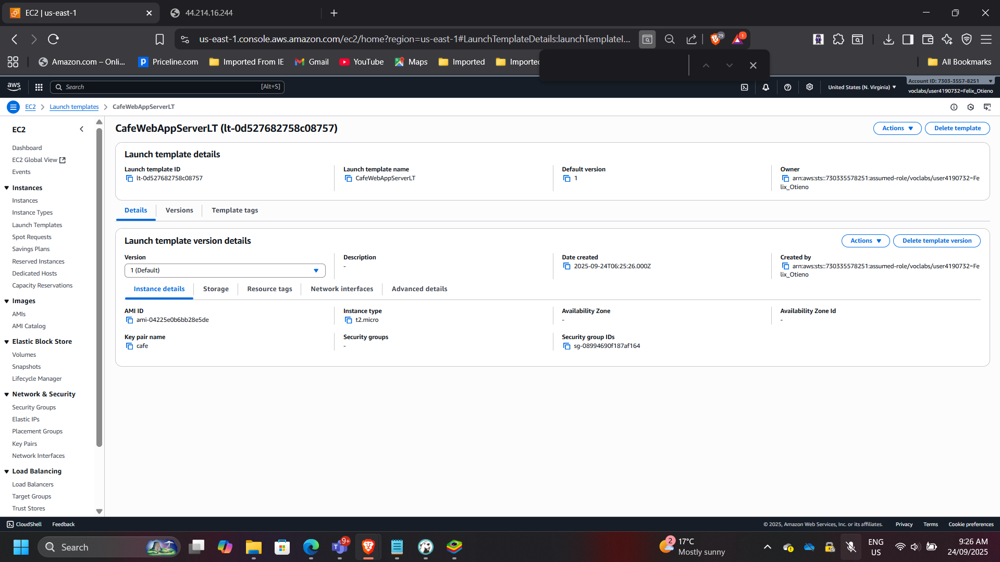
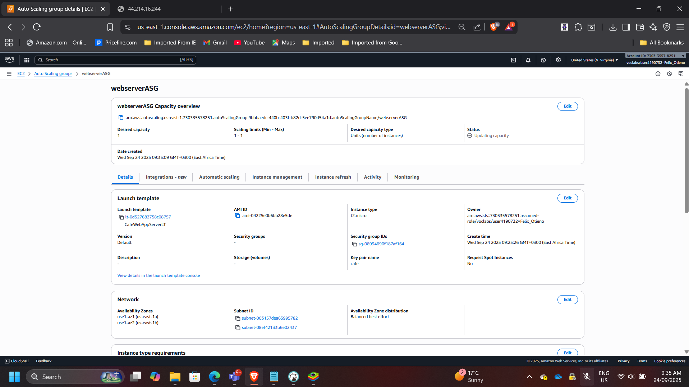
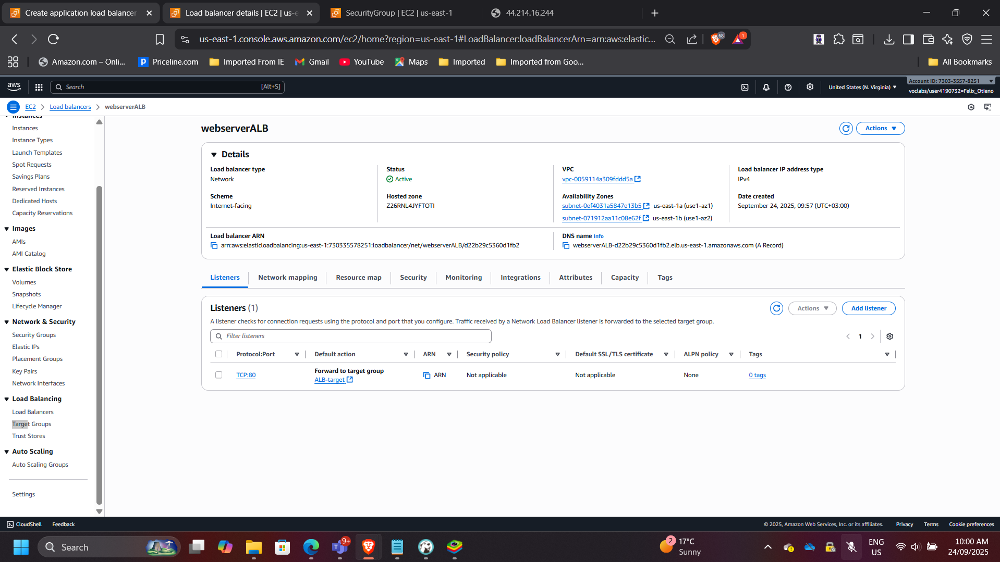
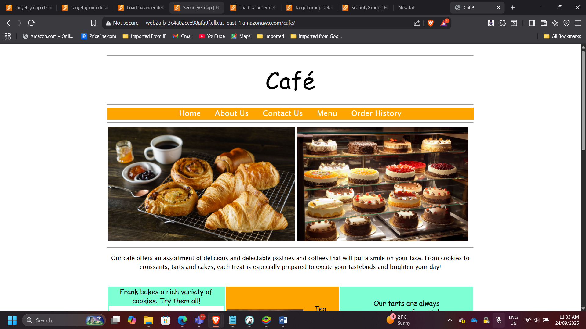
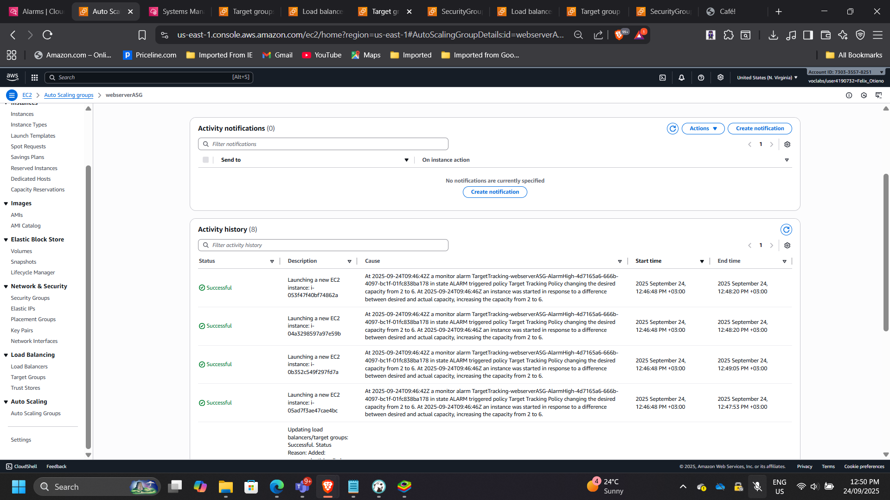

Scalable and Highly Available Web Application for Café
Project: Scalable and Highly Available Web Application for Café
Timeline: September 2025
Role: Cloud Solutions Architect
Skills: AWS VPC, EC2 Auto Scaling, Application Load Balancer (ALB), Launch Templates, NAT Gateway, CloudWatch Alarms, Systems Manager
Project Summary
Designed and deployed a scalable, fault-tolerant, and cost-efficient web application architecture for a café anticipating a surge in traffic after media exposure. The solution leverages Amazon EC2 Auto Scaling and an Application Load Balancer (ALB) across multiple Availability Zones, ensuring high availability, resilience, and responsiveness under varying workloads.
Objectives
- Inspect and evaluate the existing VPC and application environment.
- Extend the network architecture across multiple Availability Zones.
- Create a reusable Launch Template for EC2 instances.
- Deploy an Auto Scaling Group with scaling policies based on CPU utilization.
- Configure an Application Load Balancer (ALB) for cross-AZ traffic distribution.
- Validate fault tolerance through load testing and CloudWatch alarms.
Implementation & Highlights
1. Multi-AZ Network Update
- Configured a NAT Gateway in the second Availability Zone.
- Updated route tables to ensure private subnets in both AZs could securely reach the internet.

2. Created Launch Template
- Standardized EC2 deployments with AMI, instance type, IAM role, security group, and tagging.
- Template ensured consistent configurations for all Auto Scaling instances.

3. Deployed Auto Scaling Group
- Configured with desired = 2, min = 2, max = 6 instances.
- Scaling policy: add/remove instances when Average CPU > 25%.
- Instances deployed across Private Subnet 1 and 2 for high availability.

4. Configured Application Load Balancer
- Created an ALB in two public subnets.
- Configured security group to allow HTTP (port 80) access.
- Linked target group to the Auto Scaling group for dynamic registration.

5. Testing & Validation
Without Load:
- Verified that café web application was accessible via the ALB DNS (
/cafe).

With Load (Auto Scaling):
- Simulated CPU stress using Systems Manager Session Manager.
- Observed scale-out activity in EC2 console as Auto Scaling launched additional instances.

Outcome & Impact
- Delivered a fault-tolerant, multi-AZ web architecture for the café.
- Improved resilience: no single point of failure, traffic distributed evenly.
- Enabled cost optimization with Auto Scaling—instances added only under demand.
- Gained practical experience with AWS Auto Scaling, ALB, CloudWatch alarms, and Systems Manager load simulation.